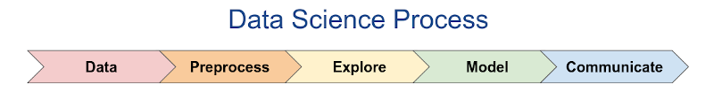
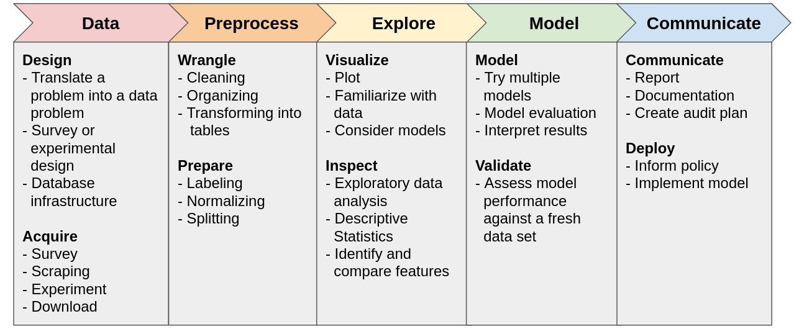

Concenquence
Concenquence Resources
ResourcesData Science and Consequences in Mathematical Modeling
This page contains resources for a session at the 2021 NCTM Fall Virtual Conference.
Below is an overview of the material from the session along with additional resources. At the core of what I want to communicate are two ideas:
- Math is awesome
- Doing harm is bad
A Data Science Process
Overview
The figure below depicts a Data Science Process.
This process developed as multiple disciplines converged through modeling with data (Chapman 1999, Han 2012 Figure P.1, Schutt 2013 p. 41, Estrellado 2020 Chp. 3, Nantasenamat 2020, Kolter 2021).

| Roughly, this process involves getting data, cleaning it up, inespecting it, modeling it, and sharing the results. This process is not so linear in practice. Rather like the engineering design process it can iteratively converge toward a solution. |
This process is a structure for modeling with data and it is a tool that can incorporate concepts of data science into existing courses. Below is a brief description of the five stages stages.
Data — Design and Acquire
The first stage involves getting data. This might require the design of an experiment or survey, or it could involve simply downloading a dataset. In any case, we require a data problem and data with which to solve it.
Preprocess — Wrangle and Prepare
Preprocessing data might be the stage with which students (and teachers) are least familiar, but by many accounts it is where data scientists spend the majority of their time (Kelleher and Tierney 2018, 65-67).
Preprocessing involves cleaning up and wrangling data into usable formats.
If you have ever combed through a spreadsheet to find cells that interpreted an entry as a date when it wasn't, you have a sense of the preprocessing expereince and how messy it can be.
Explore — Visualize and Inspect
The third stage of Explore almost always involves visualizing data, particularly for the data projects our students work on.
In fact, it is not unusual to see this stage called "Visualize".
Exploring could also involve analyzing descriptive statistics to familiarize and get a sense of data.
Model — Model and Validate
This is the most important stage in some respects.
Chances are good that your curriculum documents emphasize this stage and largely ignore the others!
A critical component of modeling which is often left out is validation.
Validation involves actually checking to verify your model is working.
Communicate — Communicate and Deploy
The stage of Communicate could also include "Deploy", i.e., incorporating a model into a product or implementing a policy decision.
While some students hopefully will deploy products they develop, we emphasize communication as the critical component after developing a mathematical model.
The Data Science Process is useful as a framework for:
- Conceptualizing the processes of modeling with data
- Scaffolding data projects
- Analyzing data applications
The expanded figure below lists some of the components of each stage in the process. This partial list includes steps that students might utilize when working with introductory models.
| An expanded view of the Data Science Process. In addition to iterating on these stages, some stages may blend together. For example, exploration can easily blend into the modeling stage. |
When first introducing the framework, we might scaffold a data modeling project by providing the data, providing explicit walk-throughs of the middle stages, or offering templates for the last stage. As students familiarize themselves with the process and we remove scaffolding, we are working toward a point when the students can execute an entire data modeling project from a single prompt.
While the structure is useful and captures an abstraction of what modern data science often looks like, it is just one conceptualization. Projects often don't flow in a linear progression from the first stage to the last. For example, after the stage of Explore, we might revisit the stage of Preprocess to do some work we missed. After the stage of Model, we might realize we need to find different features, so we revisit Explore. There can also be a lot of overlap between stages.
Example Projects
The following examples are intended to demonstrate the framing of data projects with the Data Science Process. The complete projects are not necessarily presented, but I try to offer enough information that you could do these projects or facilitate them with students.
Shortcuts to the examples below:
- Bouncy Ball - How high does a bouncy ball bounce?
- High Tide - When will high tide be on Saturday?
- Fruit Classifier - What type of fruit is in this image?
Example: Bouncy Ball
| Data |
|
||
| Preprocess |
|
||
| Explore |
|
||
| Model |
|
||
| Communicate |
|
Example: Blue Fishing
| Data |
|
||
| Preprocess |
|
||
| Explore |
Important to note: the testing data is currently hidden at this stage and we are working only with the training data.
|
||
| Model |
|
||
| Communicate |
|
Example: Fruit Classifier
Fruit Classification Colaboratory Project
| Data |
|
||
| Preprocess |
|
||
| Explore |
|
||
| Model |
|
||
| Communicate |
|
Concern
When students are familiar with the Data Science Process, we can leverage its structure to critically analyze data technologies, including those that we are building in class.
When our models are useful, which is to say that they make good predictions, it is important to be able to identify how and why they work as a critical step in anticipating when they will fail. Given the simplicity of most of the models our students will see, this often involves questions of inference and variability. However, students should understand that as their models grow more complex, so do the complications of applying those models, even to the extent that models are not applicable (Birhane 2021).
It can be incredibly difficult to identify harm done by technologies, let alone predict or anticipate the source of it in increasingly complex data systems that are interacting with complex social systems, often with multiple feedback loops. In critically analyzing data science products, context is everything and there is no limit of nuance. When we deploy models or products to make or aid in decisions that affect lives, we have a moral obligation to validate and monitor those products to avoid doing harm.
Harm from technologies may include, but is not limited to, disproportionate harm done to subpopulations. We have seen that historically marginalized populations are often further marginalized by data technologies (Benjamin 2019, Criado-Perez 2020, Eubanks 2019, Wachter-Boettcher 2017). Bias and harm may be incorporated at each stage of the Data Science Process. Assuming we wish to avoid causing harm, we should be conscientious of these issues and pass this understanding on to students who are active consumers and future practitioners of data technologies.
The list below contains some of the considerations we may face at each stage of the data science process.
| Data |
|
| Preprocess |
|
| Explore |
|
| Model |
|
| Communicate |
|
| Meta |
|
Consequence
Many people are working on issues of technology and society, and particularly data technologies. Some years ago there was a flood of media attention to the sudden demand for philosophers in tech. There were any number of articles about the modern-day reformulation of the trolley problem in the context of self-driving cars. Engineers creating self-driving cars are in a situation where they need to decide how a car should respond in an accident before that accident happens. Who is at fault when a self-driving car causes harm? This is, unfortunately, not hypothetical.
Here are some interesting articles documenting consequences. I kind of want to start collecting them in an organized way. Maybe let me know if you'd like that (and like to help)?
-
Machine Bias Risk Assessments in Criminal Sentencing
ProPublica, 2016
-
How Photos of Your Kids are Powering Surveillance Technology
New York Times, 2019
-
A.I. Is Learning From Humans. Many Humans
New York Times, 2019
-
Wrongfully Accused by an Algorithm
New York Times, 2020
-
Another Arrest, and Jail Time, Due to a Bad Facial Recognition Match
New York Times, 2020
-
Police are Telling ShotSpotter to Alter Evidence from Gunshot-Detecting AI
Vice, 2021
-
AI's Islamaphobia Problem
Vox, 2021
-
Vox, It's Disturbingly Easy to Trick AI into Doing Something Deadly
Vox, 2019
-
Retail stores are packed with unchecked facial recognition
The Verge, 2021
-
Eye-catching advances in some AI fields are not real
Science, 2020
-
Advancing AI in health care: It's all about trust
StaNews, 2019
-
AI is rushing into patient care - and could raise risks
Scientific American, 2019
-
Court clears 39 post office operators convicted due to 'corrupt data'
The Guardian, 2021
Conclusions
"Our success, happiness, and wellbeing are never fully of our own making. Others' decisions can profoundly affect the course of our lives."
– Barocas et al 2019, Page 1
When we create models trained on data, we are creating optimization problems to maximize or minimize some set of metrics that we have identified as valuable or have let an algorithm identify as valuable. We are encoding values. The extent to which these algorithms might cause harm can be incredibly difficult to predict or even detect, so it is important that we are able to critically analyze methods and applications so as to minimize harm.
When handing over the tools of mathematics, we are responsible as educators for teaching their responsible use. It is a sin of omission when we fail to acknowledge the consequences of the content we are teaching. If we are teaching mathematics because it is practical then it is because mathematics is applicable in solving problems, and applied mathematics has consequences. From the problems they choose to solve to the solutions they choose to find through the choices embedded in the processes of modeling, practitioners of mathematics are making decisions that affect us all and we are their educators.
Resources
References
Barocas, Solon, Moritz Hardt, and Arvind Naraynan. 2019. Fairness and Machine Learning. https://www.fairmlbook.org
Benjamin, Ruja. 2019. Race after Technology: Abolitionist Tools for the New Jim Code. Medford, MA: Polity.
Birhane, Abeba. 2021. “The Impossibility of Automating Ambiguity.” Artificial Life 27, no. 1 (June): 44-61. 10.1162/artl_a_00336.
Brokaw, Galen. 2010. A History of the Khipu. Cambridge, United Kingdom: Cambridge University Press.
Chapman, Pete, Julian Clinton, Randy Kerber, Thomas Khabaza, Thomas Reinartz, Colin Shearer, and Rüdiger Wirth. 1999. “CRISP-DM 1.0: Step-by-step Data Mining Guide.” https://www.the-modeling-agency.com/crisp-dm.pdf.
Criado-Perez, Caroline. 2020. Invisible Women: Exposing Data Bias in a World Designed for Men. London, England: Vintage.
Estrellado, Ryan A., Emily A. Freer, Jesse Mostipak, Joshua M. Rosenberg, and Isabella C. Velázquez. 2020. Data Science in Education Using R. New York, NY: Routledge.
Eubanks, Virginia. 2019. Automating Inequality: How High-Tech Tools Profile, Police, and Punish the Poor. New York, NY: Picador.
Friendly, Michael. 2006. “A Brief History of Data Visualization.” In Handbook of Computational Statistics: Data Visualization, edited by C. Chen, W. Hardle, and A. Unwin. Heidelberg: Springer-Verlag.
Fry, Hannah. 2018. Hello World: How to Be Human in the Age of the Machine. London, England: Transworld
Publishers.
Gebru, Timnit, Jamie Morgenstern, Briana Vecchione, Jennifer Wortman Vaughan, Hanna Wallach, Hal Daumé III, and Kate Crawford. 2018. “Datasheets for Datasets.” (March). https://arxiv.org/abs/1803.09010.
Grus, Joel. 2019. Data Science from Scratch: First Principles with Python. 2nd ed. Sebastopol, CA: O'Reilly Media, Inc.
Han, Jiawei, Kamber Michelin, Jian Pei. 2012. Data Mining, Concepts and Techniques. The Morgan Kaufmann Series in Data Management Systems.
Hill, Kashmir, and Aaron Krolik. 2020. “Your Kids' Photos May be Powering Surveillance.” New York Times:
Artificial Intelligence Edition (New York), 2020, 40-45.
Hooker, Sara. 2021. “Moving beyond “algorithmic bias is a data problem.”” Patterns 2 (4).
https://doi.org/10.1016/j.patter.2021.100241.
James, Gareth, Daniela Witten, Trevor Hastie, and Robert Tibshirani. 2013. An Introduction to Statistical
Learning: with Applications in R. 1st ed. New York, NY: Springer.
Kelleher, John D., and Brendan Tierney. 2018. Data Science. Cambridge, MA: The MIT Press.
Kolter, Zico. 2021. “Introduction.” Practical Data Science. http://www.datasciencecourse.org/notes/intro/.
Mason, Hilary, and Chris Wiggins. 2010. “A Taxonomy of Data Science.” dataists.
http://www.dataists.com/2010/09/a-taxonomy-of-data-science/.
Metz, Cade. 2020. “Machine Learning Takes Many Human Teachers.” New York Times: Artificial Intelligence Edition (New York), 2020, 18-24.
Mitchell, Melanie. 2019. Artificial Intelligence: A Guide for Thinking Humans. New York, NY: Farrar, Straus and Giroux.
Nantasenamat, Chanin. 2020. “The Data Science Process.” Towards Data Science.
https://towardsdatascience.com/the-data-science-process-a19eb7ebc41b.
O'Neil, Cathy. 2016. Weapons of Math Destruction: How Big Data Increases Inequality and Threatens Democracy. New York, NY: Crown Publishing Group.
Schutt, Rachel, and Cathy O'Neil. 2014. Doing Data Science. Sebastopol, CA: O'Reilly Media, Inc.
Schweinsberg, Martin, and et al. 2021. “Same data, different conclusions: Radical dispersion in empirical
results when independent analysts operationalize and test the same hypothesis.” Organizational Behavior and Human Decision Processes 165:228-249. https://doi.org/10.1016/j.obhdp.2021.02.003.
Seth Jones, Ryan, Zhigang Jia, and Joel Bezaire. 2020. “Giving Birth to Inferential Reasoning.” Mathematics Teacher: Learning and Teaching PK-12 113, no. 4 (April): 287-92.
Shane, Janelle. 2019. You Look Like a Thing and I Love You. New York, NY: Voracious / Little, Brown and Company.
Wachter-Boettcher, Sara. 2017. Technically Wrong: Sexist Apps, Biased Algorithms, and Other Threats of Toxic Tech. New York, NY: W. W. Norton & Company.